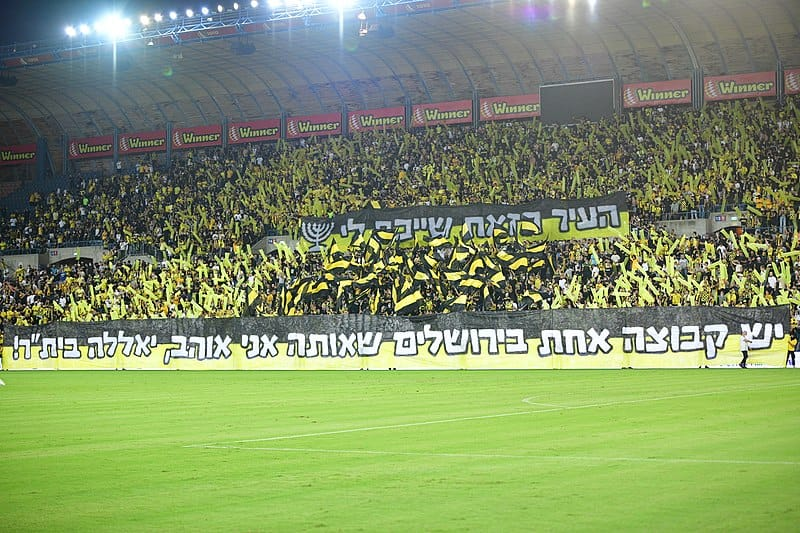

בית"ר ירושלים הוא מועדון כדורגל ישראלי מירושלים, המשתייך לאגודת הספורט בית"ר. הקבוצה הבוגרת של המועדון משחקת בליגת העל – ליגת הכדורגל
הבכירה בישראל. המועדון הוקם ב-1936, והחל משנות השבעים, נחשב לאחד הבכירים והאהודים ביותר בכדורגל הישראלי. המועדון חבר שותף בארגון המועדונים האירופיים.
הקבוצה נוהגת לשחק בתלבושת צהובה-שחורה. אצטדיונהּ הביתי של הקבוצה, החל משנת 1991, הוא אצטדיון טדי, הממוקם בשכונת מלחה, ירושלים
ומכיל 34,000 מקומות ישיבה. קודם לאצטדיון טדי, שיחקה הקבוצה בשנותיה המוקדמות באצטדיון ימק"א.
לזכות בית"ר שש אליפויות ישראל, שבעה גביעי מדינה, שלוש זכיות בגביע הטוטו ושתי זכיות בתואר אלוף האלופים. בית"ר ירושלים היא הקבוצה הראשונה
בתולדות הכדורגל הישראלי ששיחקה במפעל במסגרת אירופאית, במשותף עם הפועל באר שבע, כאשר השתתפה בגביע האינטרטוטו לעונת 1976/1977.
בין בית"ר ירושלים ובין הפועל תל אביב איבה ותיקת שנים, בשל ניגודים סימבוליים בין המועדונים, כגון רוויזיוניסטים נגד סוציאליסטים וימין נגד שמאל.
זוהי אחת היריבויות הוותיקות בספורט הישראלי, והסתיימה מספר פעמים בקטטות המוניות במגרשים. עם ירידת כוחה של היריבה העירונית הפועל ירושלים,
יריבות זו תפסה מקום יותר גדול בקרב אוהדי בית"ר וסימנה את הפועל תל אביב כיריבה המרה ביותר כיום.
בנוסף, בין בית"ר ירושלים לבין בני סכנין יש יריבות בעיקר על רקע השסע היהודי-ערבי בישראל. למרות ניסיונות הפישור והפיוס שנעשו על ידי ארקדי גאידמק
ומאזן גנאים בשנות ה-2000 היריבות המרה נמשכה. יריבות זו החלה ב-2003, אז עלתה בני סכנין לראשונה לליגת העל והקבוצות ואוהדיה נפגשו, ואז משחקים אלו כללו
עימותים רבים בין מחנות האוהדים מאז, שכללו התפרעויות בין מחנות האוהדים וגם בין האוהדים לבין משטרת ישראל.

תפאורת קהל בית"ר ירושלים בתחילת משחק
קהל ביתר מעודד ומדליק אבוקות בתחילת הדרבי (נגד הפועל ירושלים)
ליגת העל
אליפויות (6) - עונות: 1986/1987, 1992/1993, 1996/1997, 1997/1998, 2006/2007, 2007/2008.
גביע מדינה (7) - עונות: 1975/1976, 1978/1979, 1984/1985, 1985/1986, 1988/1989, 2007/2008, 2008/2009.
גביע הטוטו (3) - עונות: 1997/1998, 2009/2010, 2019/2020.
אלוף האלופים (2) - עונות: 1976, 1986.
גביע ליליאן (1) - עונת 1985/1986.
גביע השלום (1) - עונת 2000/2001.
שיאים קבוצתיים
עונות בליגה הראשונה: 53 (כולל עונת 2021/2022).
המיקום הנמוך ביותר: מקום 10 בליגת המשנה (אז ליגה א', בעונת 1955/1956).
ניצחון הליגה הגבוה ביותר בליגה כלשהי: 0-8 (נגד הפועל רמלה, עונת 1949/1950, בליגה המיוחדת של מחוז ירושלים).
הניצחון הגבוה ביותר בליגה הבכירה: 8–1 (נגד מכבי הרצליה, בעונת 1994/1995.
הניצחון הגבוה ביותר בכל הזמנים: 9–0 (נגד בית"ר רמלה, בעונת 1992/1993, סיבוב ח' בגביע המדינה).
הניצחון הגבוה ביותר בגביע הטוטו: 0-8 (נגד מועדון ספורט אשדוד, בעונת 2010/2011.
ההפסד הגבוה ביותר בכל הזמנים: 0–7 (נגד מכבי תל אביב, בעונת 2000/2001 בליגת העל; ונגד הפועל רמת גן בגביע המדינה בעונת 1949/1951).
רצף ניצחונות הליגה הארוך ביותר בליגה הבכירה: 9 (בעונת 1996/1997, בין ה־1 בנובמבר 1996 ל־9 בפברואר 1997).
רצף ניצחונות הליגה הארוך ביותר בכל הזמנים: 19 (בעונה הכפולה 1966/1968).
רצף משחקי ליגה בהם הקבוצה הבקיעה (שיא ליגה): 43 (22 באפריל 2017 – 27 באוגוסט 2018).
שיא ניצחונות בעונה אחת: 22 (בעונת 1992/1993).
שיא הפסדים בעונה אחת: 20 (בעונת 1990/1991).
שיא צבירת נקודות בעונה אחת: 71 (בעונת 1992/1993).
שיא הבקעת שערים בעונה אחת: 75 (בעונת 1993/1994 ובעונת 2017/2018).
שיא ספיגת השערים בעונה אחת: 66 (בעונת 1993/1994).
שיא ספיגת השערים הנמוכה ביותר בעונה אחת: 14 (בעונת 1977/1978).
שיא הפרש שערים בעונה אחת: 42 (בעונת 1996/1997).
שיא הפרש שערים שלילי בעונה אחת: 22- (בעונת 1954/1955).
שיא דקות משחק בליגה הראשונה ללא ספיגת שער: 928 דקות (בעונת 1973/1974).
שיאים אישיים
שיאן ההופעות בכל הזמנים (במסגרת ליגה בלבד): אורי מלמיליאן, 423 הופעות.
מלך השערים בכל הזמנים (במסגרת ליגה בלבד): אלי אוחנה, 142 שערים.
מלך השערים בכל הזמנים (במסגרת גביע המדינה בלבד): אורי מלמיליאן, 29 שערים.
שיא שערים למשחק רשמי אחד: סימון אלפסי, 6 שערים (בניצחון 8–1 על קבוצת דגל ציון תל אביב ב-29 בנובמבר 1947).
שיא הבקעת שערים לשחקן בעונה אחת (30 משחקים): אלי מיאלי, 18 שערים.
שיאן אי-ספיגה (דקות ללא ספיגת שער ברציפות כשוער): יוסף (יוז'י) סורינוב, 928 דקות.
כובש השער המבוגר ביותר: ארנסט וינברגר, בן 40 שנים ו-363 ימים (כבש במשחקו האחרון בקבוצה, ב-30 במרץ 1957, נגד מכבי רחובות, בליגה א').
השחקן המבוגר ביותר ששיחק במדי הקבוצה: ארנסט וינברגר, בן 40 שנים ו-363 ימים (משחקו האחרון בקבוצה היה ב-30 במרץ 1957 נגד מכבי רחובות בליגה א').
כובש השער המהיר ביותר לזכות הקבוצה: מרקוס רומולו, 17 שניות מהפתיחה (ב-2 במרץ 2008, נגד הפועל כפר סבא, בליגת העל).
ספיגת השער המהירה ביותר לחובת הקבוצה: ליאור אסולין, 13 שניות מהפתיחה (ב-6 בדצמבר 2003, נגד בני סכנין, בליגת העל).